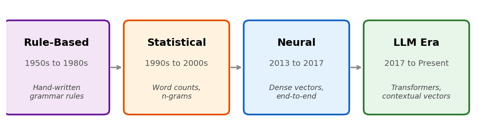
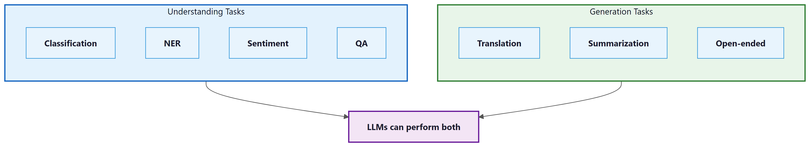
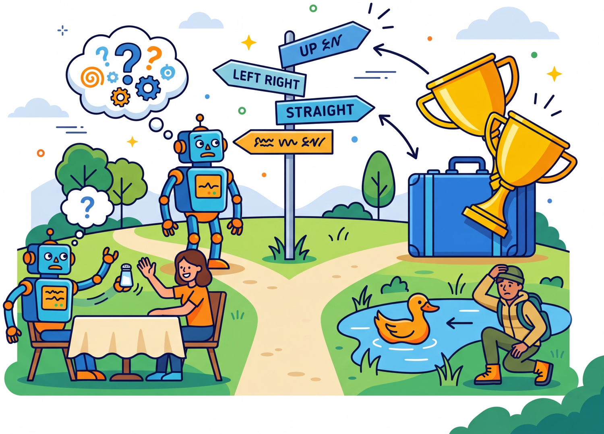
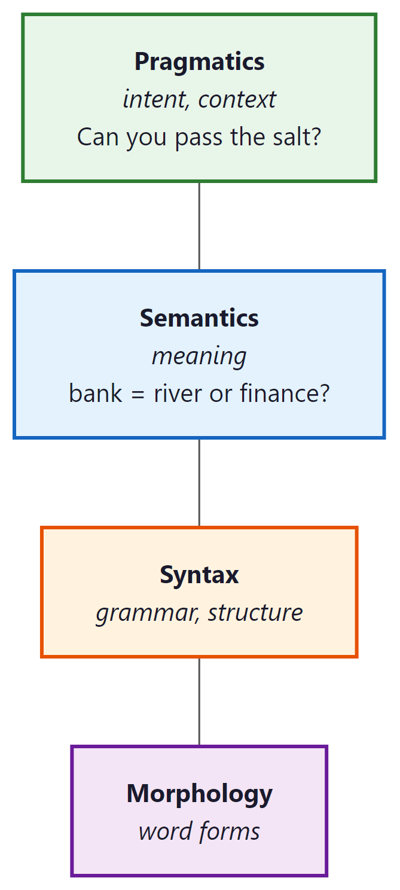

Before transformers, we parsed sentences with rules and prayers. The prayers had slightly better recall.
Lexica, Nostalgically Regex AI Agent
Prerequisites
This section is a gentle entry point requiring only the ML fundamentals from Section 0.1 (features, supervised learning, loss functions). No prior NLP experience is assumed. If you are comfortable with the idea that models learn from data, you are ready to begin.
This entire book is a journey through one central question: How do we represent language in a form that machines can work with? Every breakthrough in NLP, from bag-of-words to transformers to ChatGPT, is fundamentally an answer to this question. The better our representation, the more capable our systems become.
The Story of NLP
Try this thought experiment. Open ChatGPT or Claude and type: "Explain quantum entanglement using only words a five-year-old would understand, but make it scientifically accurate." In two seconds, you will get a response that is creative, coherent, factually grounded, and tailored to an audience you specified. A decade ago, this was science fiction. Today, it runs on your phone.
How did we get here? That is the story of Natural Language Processing (NLP), the field of AI that teaches machines to understand, generate, and reason about human language. This chapter traces that story from its humble beginnings to the present day, and along the way, you will build the foundational skills that everything else in this book rests on.
But here is the thing: language is arguably the hardest problem in AI. While computer vision "solved" object recognition to superhuman levels by 2015, and game-playing AI mastered chess and Go, language understanding remained stubbornly difficult until very recently. The reason is that language requires simultaneously handling multiple layers of complexity. It is ambiguous ("I saw her duck" could mean she lowered her head, or that I saw her pet duck), it is context-dependent ("It's cold" means something different in a weather conversation versus a detective story), and it is infinitely composable (you can construct sentences that have never been written before, and humans will understand them instantly).
The Four Eras of NLP

In Chapter 00, you built neural networks and trained them with cross-entropy. Now we apply those tools to the hardest domain of all: human language. NLP has undergone four major paradigm shifts. Understanding why each transition happened is key to understanding where we are today.


Era 1: Rule-Based NLP (1950s to 1980s)
The earliest NLP systems were hand-crafted rules. Linguists would write grammars like
S → NP VP (a sentence is a noun phrase followed by a verb phrase) and build
parsers to decompose text. ELIZA (1966), the famous chatbot, used pattern matching:
if the user says "I feel X", respond with "Why do you feel X?"
Why it failed to scale: Language has too many exceptions. You cannot write enough rules to cover the full complexity of natural language. Every new domain (legal, medical, informal chat) required starting over from scratch.
Era 2: Statistical NLP (1990s to 2000s)
Instead of writing rules, let the machine learn patterns from data. Statistical models like Hidden Markov Models (HMMs) for part-of-speech tagging, Naive Bayes for text classification, and phrase-based statistical machine translation (Google Translate circa 2006) dominated this era.
The representation was still shallow: documents were bags of word counts, and features were hand-engineered (bigrams, POS tags, etc.).
Why it hit a ceiling: Feature engineering was labor-intensive and domain-specific. Models could not capture long-range dependencies or deep semantic meaning. "The movie was not bad" was hard to classify correctly because "not" and "bad" are separate features.
Notice the pattern across these four eras: each breakthrough was fundamentally a representation breakthrough. Rules encoded knowledge in grammar. Statistics encoded it in word counts. Neural networks encoded it in dense vectors. Transformers encoded it in context-dependent vectors. When you feel stuck on a problem, ask yourself: "Am I using the right representation?" That question has driven nearly every major advance in this field.
Era 3: Neural NLP (2013 to 2017)
The game changed when Tomas Mikolov published Word2Vec in 2013. Instead of hand-crafted features, neural networks could learn dense vector representations of words directly from data. For the first time, "king" and "queen" were mathematically close in vector space.
Recurrent Neural Networks (RNNs, LSTMs) could process entire sequences word by word, maintaining a "memory" of what came before, as we detail in Chapter 03: Sequence Models and Attention. Sequence-to-sequence models with attention enabled neural machine translation that beat statistical systems. The key advantage: instead of translating phrase by phrase (the statistical approach), neural models could consider the entire source sentence when generating each target word, producing more fluent and coherent translations.
Why it was not enough: RNNs process text sequentially (one word at a time), making them slow to train and bad at capturing very long-range dependencies. A sentence that starts with "The cat, which sat on the mat that was in the house that Jack built, ..." loses information about "The cat" by the time the model reaches the end.
Era 4: The LLM Era (2017 to Present)
In 2017, the paper "Attention Is All You Need" introduced the Transformer architecture, which processes all words in parallel using self-attention (covered in Section 3.3). This removed the sequential bottleneck of RNNs and enabled training on vastly more data. We study the full Transformer in Chapter 04.
BERT (2018) showed that pre-training a transformer on massive text data and then fine-tuning it on specific tasks crushed every benchmark. GPT-2 (2019) showed that language models could generate coherent paragraphs. GPT-3 (2020) revealed that scaling up (175B parameters) led to emergent abilities like in-context learning. ChatGPT (2022) and GPT-4 (2023) brought LLMs to the mainstream.
Each era transition was driven by a representation breakthrough: rules, then word counts, then dense vectors, then contextual vectors, then massive pre-trained language models. The quality of the representation determines the ceiling of what NLP systems can do.
Who: Priya, NLP engineer at a medical records startup (2015)
Situation: Building an automated system to extract drug names and dosages from clinical notes
Problem: The initial rule-based system used 2,400 regex patterns and covered only 73% of drug mentions, missing abbreviations like "ASA" for aspirin and misspellings like "metforman"
Dilemma: Keep hiring linguists to write more rules (adding roughly 50 patterns per week) or pivot to a statistical CRF model trained on 8,000 annotated notes
Decision: Trained a Conditional Random Field (CRF) model with hand-crafted features including word shape, prefix/suffix, and dictionary lookups
How: Two annotators labeled 8,000 clinical notes over 6 weeks. The CRF used 47 feature templates including character n-grams, part-of-speech tags, and gazetteer membership
Result: Coverage jumped from 73% to 91% within two months, and the system handled abbreviations and misspellings without explicit rules. Adding new drug classes required more labeled data rather than more engineering
Lesson: When your rule count exceeds your patience, it is time to let data do the work. The transition from rules to statistics is not about smarter rules; it is about a fundamentally different approach to capturing language patterns.
For each approach below, identify which era it belongs to (rule-based, statistical, neural, or LLM):
- A grammar that says
VERB → "eat" | "run" | "sleep" - Computing P(word | previous 2 words) from a large corpus
- Prompting GPT-4 with "Classify this email as spam or not spam"
- Training a 300-dimensional vector for each word using context prediction
Reveal answers
1. Rule-based (hand-written grammar) 2. Statistical (n-gram language model) 3. LLM era (in-context learning) 4. Neural (Word2Vec)
Understanding how NLP evolved gives us the vocabulary to discuss its building blocks. With that historical context in hand, let us turn to the specific tasks that NLP systems are designed to solve.
Core NLP Tasks

Before diving deeper, let us map the landscape of problems that NLP solves. These same tasks will reappear throughout the book as we build systems with LLMs.
At the highest level, NLP tasks fall into three families based on the relationship between input and output:
- Sequence classification: Map an entire input text to a single label or score (e.g., sentiment analysis, spam detection).
- Token classification: Assign a label to each token in the input (e.g., named entity recognition, part-of-speech tagging).
- Sequence-to-sequence: Map an input sequence to an output sequence of potentially different length (e.g., translation, summarization, open-ended generation).
| Task | Family | Input | Output | Example |
|---|---|---|---|---|
| Text Classification | Seq. class. | Document | Category label | Spam detection, topic categorization |
| Sentiment Analysis | Seq. class. | Text | Polarity score | "Great movie!" → Positive (0.95) |
| Natural Language Inference | Seq. class. | Premise + hypothesis | Entailment / contradiction / neutral | "It rained." + "The ground is wet." → Entailment |
| Named Entity Recognition | Token class. | Text | Tagged entities | "Apple [ORG] released iPhone 16 [PRODUCT]" |
| POS Tagging | Token class. | Text | Tags per token | "The/DET cat/NOUN sat/VERB" |
| Machine Translation | Seq2seq | Text in language A | Text in language B | "Hello" → "Bonjour" |
| Summarization | Seq2seq | Long document | Short summary | Condensing a 10-page report to 3 sentences |
| Question Answering | Seq2seq / Extraction | Question + context | Answer span or text | "Who wrote Hamlet?" → "Shakespeare" |
| Open-ended Generation | Seq2seq | Prompt | Continuation | "Write a poem about..." → (poem) |

Before 2018, each NLP task required a separate model with a custom architecture. Today, a single LLM like GPT-4 or Claude can perform all six tasks above (and hundreds more) with just a text prompt. This unification is one of the defining characteristics of the LLM era and is why understanding the underlying representations matters so much.
Who: Marcus, ML team lead at a fintech company processing customer support tickets
Situation: The team maintained five separate NLP models: sentiment classification (BERT fine-tuned), topic routing (logistic regression on TF-IDF), urgency detection (SVM), entity extraction (spaCy NER), and auto-reply drafting (T5)
Problem: Each model required its own training pipeline, monitoring dashboard, and retraining schedule. Total maintenance cost was roughly 60 engineer-hours per month across the five systems
Dilemma: Continue maintaining five specialized models with strong per-task performance, or replace them all with a single LLM via prompt engineering at higher per-query inference cost
Decision: Replaced all five models with GPT-4 API calls using structured JSON output and task-specific system prompts
How: Wrote five prompt templates (one per task) and a single orchestration layer that routed each ticket through all five prompts in a batch. Total development time: 3 weeks, compared to 4 months for the original five-model pipeline
Result: Maintenance dropped from 60 to 8 engineer-hours per month. Accuracy matched or exceeded the specialized models on 4 of 5 tasks (entity extraction dropped by 2 F1 points). Monthly inference cost rose by $1,200, but engineering time savings offset this by roughly 4x
Lesson: The LLM era's defining feature is task unification. When a single model can handle classification, extraction, and generation, the economics of maintaining specialized pipelines often stop making sense.
These tasks may sound straightforward when described in isolation, but the underlying material they operate on, natural language, is deceptively complex. To appreciate why even powerful LLMs still struggle in certain situations, we need to examine what makes language so difficult for machines.
Why Language Is Hard
The difficulty of natural language processing reflects a deep result in linguistics and philosophy: the meaning of an utterance is vastly underdetermined by its surface form. The philosopher W.V.O. Quine demonstrated this with his "indeterminacy of translation" thesis (1960), showing that the same observable evidence is compatible with radically different interpretations. Wittgenstein's later work reached a similar conclusion: meaning is not a fixed property of words but emerges from their use within a "language game." Every NLP system must confront this gap between form and meaning. Rule-based systems tried to bridge it with grammar; statistical systems with co-occurrence counts; neural systems with learned representations. The progress from each era to the next can be understood as finding richer ways to capture the contextual, pragmatic, and world-knowledge signals that determine what an utterance actually means.

The sentence "Buffalo buffalo Buffalo buffalo buffalo buffalo Buffalo buffalo" is grammatically correct English. If NLP seems hard, remember that natural language was never designed to be easy for anyone, humans included.
To appreciate why NLP has been one of AI's toughest challenges, consider these phenomena:
- Ambiguity: "I saw her duck" has two completely valid interpretations
- Coreference: "The trophy doesn't fit in the suitcase because it is too big" ... but what is "it"?
- Compositionality: "The movie was not un-enjoyable" involves triple negation that humans parse effortlessly
- World knowledge: "The pen is in the box. The box is in the pen." The second "pen" means a playpen, but you need world knowledge to figure this out
- Pragmatics: "Can you pass the salt?" is technically a yes/no question, but no one answers "Yes" and stops there

Every technique we will study in this book is an attempt to solve these problems. Bag-of-words ignores word order entirely, Word2Vec captures some semantics but not context, transformers handle long-range context but still struggle with world knowledge. Understanding what each technique can and cannot do is more important than memorizing how it works.
The Representation Thread
Let us step back and connect all four eras through a single lens: representation quality. Every advance in NLP has come from finding a better way to turn words into numbers.
| Era | Representation | What It Captures | What It Misses |
|---|---|---|---|
| Rule-Based | Symbolic parse trees | Grammar structure | Everything else |
| Statistical | Word counts (sparse) | Word frequency, some patterns | Meaning, word order |
| Neural | Dense vectors (300d) | Semantic similarity | Context, polysemy |
| LLM | Contextual vectors (thousands of dims) | Meaning in context | Perfect reasoning (still improving) |
The progression is clear: denser (fewer dimensions, more information per number), more contextual (same word, different meaning in different sentences), and more general (works across tasks without task-specific engineering). This module walks through each step in this progression, from Bag-of-Words all the way to contextual embeddings. Chapters 2 through 4 will take us the rest of the way to transformers.
Show Answer
The two broad categories are understanding tasks and generation tasks. Understanding tasks (classification, NER, sentiment analysis, QA) take text as input and produce a label, tag, or extracted span. Generation tasks (translation, summarization, open-ended generation) take text as input and produce new text as output. In the LLM era, a single model can handle both categories through prompting.
Show Answer
The representation thread is the idea that every major NLP advance was driven by a better way of turning words into numbers. Rules gave way to word counts (statistical era), then dense vectors (neural era), then contextual vectors (LLM era). It matters because the quality of the representation sets the ceiling for what NLP systems can achieve. Better representations enable better downstream performance without needing task-specific engineering.
Show Answer
First, language is ambiguous: the same sentence can have multiple valid interpretations (e.g., "I saw her duck" has two meanings). Second, language requires world knowledge that is not present in the text itself (e.g., understanding that "pen" means "playpen" in certain contexts). Other valid answers include compositionality (complex negation patterns), coreference resolution (tracking what "it" refers to), and pragmatics (understanding intent beyond literal meaning).
Show Answer
Supervised NLP requires labeled training data where each input has a known correct output. Example: spam detection, where emails are labeled as spam or not-spam. Unsupervised NLP discovers patterns from raw text without labels. Example: Word2Vec learns word representations from unlabeled text by predicting context words. Pre-training large language models is also unsupervised (or self-supervised), since the model learns to predict the next word without human annotations.
Show Answer
The Transformer replaced sequential processing with parallel self-attention, which brought two key advantages. First, it can process all words in a sequence simultaneously rather than one at a time, making training dramatically faster and enabling the use of much larger datasets. Second, self-attention allows every word to directly attend to every other word regardless of distance, solving the long-range dependency problem that plagued RNNs (where information about early words faded by the end of long sequences). These advantages enabled the massive scale-up that produced BERT, GPT, and modern LLMs.
For most NLP tasks, lowercasing text before tokenization reduces vocabulary size significantly. The exception is named entity recognition and tasks where capitalization carries meaning. When in doubt, try both and compare validation metrics.
Chomsky's observation that language exhibits "discrete infinity," the ability to produce an unbounded number of novel sentences from a finite set of rules and vocabulary, is precisely what makes NLP so difficult compared to other AI domains. Images are continuous and locally smooth; small pixel changes produce small semantic changes. Language is discrete and combinatorially explosive; changing a single word can invert the meaning of an entire paragraph. This property explains why each era of NLP required increasingly powerful representational tools: rules could not capture the combinatorial space, statistics could approximate it only locally, neural networks could learn it from data, and Transformers could finally model the long-range dependencies that bind distant parts of a sentence together. The same discrete infinity that makes human language so expressive is what makes it the hardest modality for AI to master, a theme that recurs in Section 31.1 on multimodal models.
Key Takeaways
- NLP has gone through four eras (rule-based, statistical, neural, LLM), each driven by a representation breakthrough that expanded what machines could do with language.
- Language is hard because it is ambiguous, context-dependent, and compositional. A single sentence can require world knowledge, coreference resolution, and pragmatic reasoning to interpret correctly.
- The six core NLP tasks (classification, NER, sentiment, translation, summarization, QA) cover most real-world applications and reappear throughout this book.
- Representation quality determines the ceiling. The progression from sparse word counts to dense vectors to contextual embeddings is the single most important thread in NLP history.
- LLMs unify NLP. Before 2018, each task needed a separate model. Today, a single pre-trained model can handle all tasks through prompting, which is the defining feature of the current era.
Exercises
For each modern tool, name the NLP era whose ideas it most directly inherits and one earlier-era technique it deliberately abandons: (a) spaCy's named-entity recognizer; (b) BERT for classification; (c) GPT-4 in chat mode; (d) a domain-specific RAG system.
Answer Sketch
(a) Statistical / pre-deep-learning era: linear-chain CRFs and feature engineering with word shape and gazetteers. spaCy's modern NER replaces hand-crafted features with neural embeddings but kept the structured-prediction framing. (b) Deep learning era (2018-2020): BERT replaced rule-based and feature-based classifiers with bidirectional transformer encodings, abandoning per-task feature engineering. (c) LLM era: GPT-4 chat abandons supervised per-task training entirely; instructions in natural language replace task-specific datasets. (d) Hybrid: RAG inherits the LLM era's free-form reasoning while bringing back the symbolic / IR era's explicit indexing and retrieval, abandoning the "everything in the weights" assumption.
For each task, predict whether a 2010-era pipeline or a 2025 LLM solution will be cheaper at production scale: (a) part-of-speech tagging billions of tokens for a search-engine index; (b) summarizing 100K daily customer chats; (c) translating product reviews into 12 languages.
Answer Sketch
(a) 2010-era wins: spaCy or a small BiLSTM tagger runs at hundreds of thousands of tokens per second per CPU core, costing millions of times less than a frontier LLM. The task is structured and saturating; LLMs offer no quality advantage. (b) LLM wins: chat summarization needs free-form understanding the 2010 pipeline cannot match, and per-summary cost (~$0.001 with cheap models) is acceptable. (c) Mixed: classical NMT (Helsinki-NLP, NLLB) is much cheaper per token, while LLMs handle uncommon language pairs and informal text better. Production answer: route by language and quality requirement; classical for high-volume major pairs, LLM for the long tail.
Design a 6-step pipeline that combines a classical and an LLM stage for a customer support workflow: incoming tickets are first triaged by category (15 categories), then routed to either a knowledge-base lookup or an LLM responder. Justify why the first stage is not an LLM call.
Answer Sketch
Steps: (1) ingest ticket text; (2) light preprocessing (PII redaction, language detection); (3) fastText classifier assigns one of 15 categories; (4) router decides between (a) KB lookup for FAQ-style categories or (b) LLM for novel/complex categories; (5) LLM (or KB) generates draft response; (6) human review for low-confidence outputs. Why fastText for triage: it's millisecond-latency, costs effectively zero per call, and the classification target (15 known classes) is exactly what supervised models excel at. Sending every ticket to an LLM just to know its category would 100x cost and add 1-2 seconds of latency for no quality benefit.
List four properties of natural language that cause LLM failures even in 2025, and one product-design technique that mitigates each rather than trying to "solve" it.
Answer Sketch
(1) Ambiguity: "I saw the man with the telescope." Even GPT-4 may pick the wrong parse. Mitigation: ask a clarifying question when the model's confidence is low or the parse has implications. (2) Context dependence: "she" refers to whom? Mitigation: include enough conversation history or document context, and use coreference-aware retrieval in RAG. (3) Cultural and pragmatic knowledge: "It's cold in here" is often a request to close a window, not a statement. Mitigation: per-locale prompting and explicit pragmatic prompts when the use case depends on intent inference. (4) Domain jargon: "alpha hit" means different things in trading, gaming, and pharma. Mitigation: domain-grounding via RAG over the user's actual content rather than relying on parametric knowledge alone. The general lesson: language difficulties don't get "solved" by more parameters; they get managed by product design that surfaces and resolves ambiguity.
The boundary between NLP tasks is dissolving. Modern LLMs increasingly treat all NLP tasks as text generation, unifying classification, extraction, translation, and summarization under a single paradigm. Instruction-tuned models (GPT-4, Claude, Gemini) can perform essentially any NLP task given a natural language description. Meanwhile, specialized small language models (SLMs like Phi-4, Gemma 2) achieve strong performance on specific tasks at a fraction of the cost.
What's Next?
In the next section, Section 1.2: Text Preprocessing & Classical Representations, we explore the classical text preprocessing and representation techniques that preceded neural approaches.
Bibliography and Further Reading
The standard NLP textbook, freely available online, covering everything from tokenization to transformers. Chapters 1 through 6 map directly to the topics in this section. Essential reading for anyone building a solid NLP foundation.
Manning, C. D. & Schütze, H. (1999). "Foundations of Statistical Natural Language Processing." MIT Press.
The classic reference for statistical NLP methods that defined the field's second era, covering n-gram models, HMMs, and probabilistic parsing. Best suited for readers who want to understand the mathematical underpinnings of pre-neural NLP.
A comprehensive survey bridging classical and neural NLP approaches, covering CNNs, RNNs, and attention mechanisms for text. Ideal for readers transitioning from traditional methods to deep learning based NLP.
The paper that launched the "pre-train then fine-tune" paradigm, unifying NLP tasks under a single model architecture. BERT achieved state-of-the-art results on 11 benchmarks simultaneously. Required reading for understanding modern transfer learning in NLP.
Brown, T. B., Mann, B., Ryder, N., et al. (2020). "Language Models are Few-Shot Learners."
The GPT-3 paper demonstrating how scale enables in-context learning and task unification via prompting, without any gradient updates. This work marked the shift from fine-tuning to prompting as the dominant NLP paradigm. Essential for understanding why LLMs behave the way they do.
Vaswani, A., Shazeer, N., Parmar, N., et al. (2017). "Attention Is All You Need."
Introduced the Transformer architecture that underpins all modern LLMs, replacing recurrence with self-attention for parallel sequence processing. The single most influential paper in the field. Every practitioner should read this at least once.